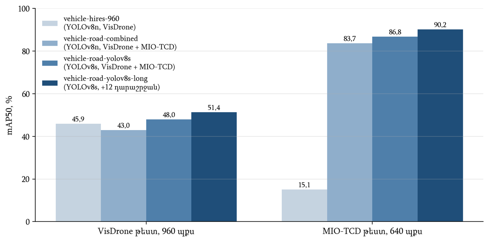
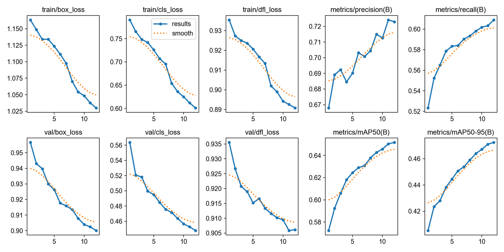
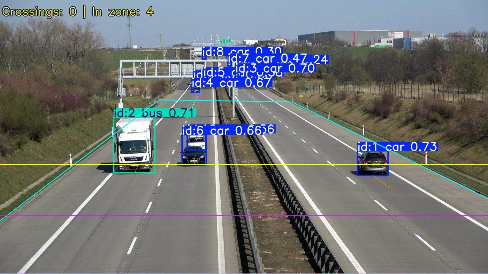
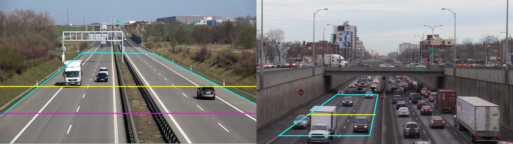
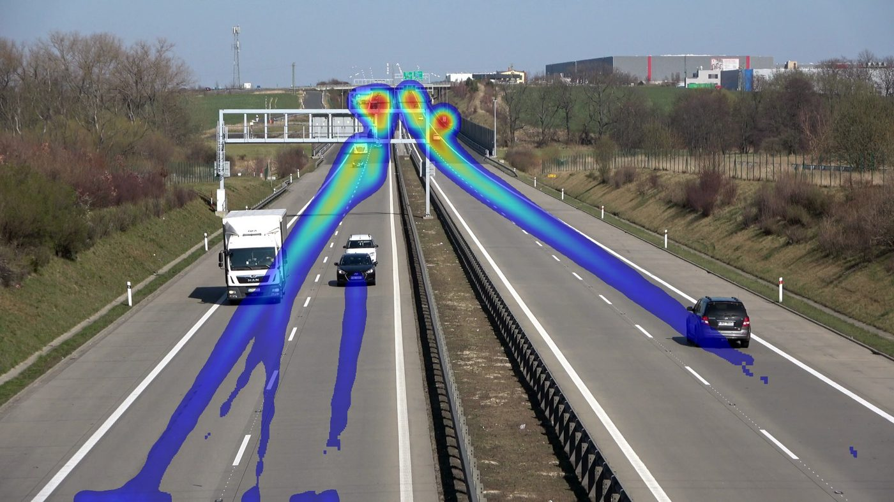
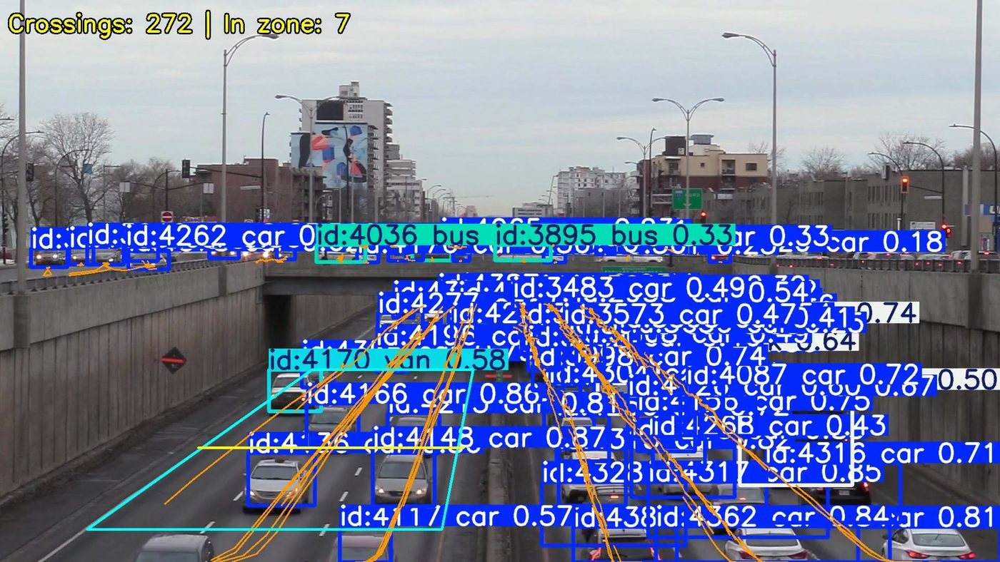

Ծրագրի աշխատանքը տեսանյութերում
5.1Ուսուցման փորձերը
Կատարվել է տասներկու ուսուցման փորձ, որոնք կազմում են հաջորդական հետազոտություն. յուրաքանչյուր հաջորդ փորձ փոփոխում է մեկ գործոն կամ ստուգում նախորդի արդյունքում առաջացած վարկածը (աղյուսակ 5.1)։ Բոլոր փորձերում օգտագործվել է AdamW օպտիմալացուցիչ, seed 42, և լավագույն դարաշրջանն ընտրվել է val ընտրանքով։
| Փորձ | Սկզբնական կշիռներ | Տվյալներ | Մուտք, պքս | Դարաշրջան | Ժամանակ, ր | Test mAP50 | Test mAP50–95 |
|---|---|---|---|---|---|---|---|
| vehicle-scratch-pilot | պատահական (YOLOv8n) | VisDrone, 1024 պատկեր | 416 | 15 | 7,8 | 2,6% | 0,9% |
| vehicle-finetune-pilot | COCO (YOLOv8n) | VisDrone, 1024 պատկեր | 416 | 15 | 8,8 | 13,8% | 6,9% |
| vehicle-finetune-full | COCO (YOLOv8n) | VisDrone, ամբողջ | 640 | 10 | 69,1 | 34,4% | 20,3% |
| vehicle-augmentation-control | finetune-full | VisDrone, 2048/դարաշրջան | 640 | 3 | 4,9 | 33,9% | 19,8% |
| vehicle-augmentation-expanded | finetune-full | VisDrone + ընդլայնում, 2048/դարաշրջան | 640 | 3 | 5,8 | 33,6% | 19,7% |
| vehicle-expanded-full | finetune-full | VisDrone + ընդլայնում, 7493 | 640 | 3 | 18,0 | 34,7% | 20,5% |
| vehicle-hires-960 | expanded-full | VisDrone + ընդլայնում, 7493 | 960 | 15 | 220,6 | 45,9% | 28,6% |
| vehicle-road-combined | hires-960 (YOLOv8n) | VisDrone + MIO-TCD | 640 | 8 | 241,3 | 47,6%¹ | 32,3%¹ |
| vehicle-road-yolov8s | COCO (YOLOv8s) | VisDrone + MIO-TCD | 640 | 8 | 611,4 | 52,6%¹ | 36,1%¹ |
| vehicle-road-yolo11s | COCO (YOLO11s) | VisDrone + MIO-TCD | 640 | 8 | —³ | 52,9%¹ | 36,3%¹ |
| vehicle-road-yolo26s | COCO (YOLO26s) | VisDrone + MIO-TCD | 640 | 8 | —³ | 54,2%¹ | 37,2%¹ |
| vehicle-road-yolov8s-long | road-yolov8s (YOLOv8s) | VisDrone + MIO-TCD | 640 | 12 | 977,5² | 55,7%¹ | 38,5%¹ |
¹ Միավորված VisDrone + MIO-TCD թեստային ընտրանքում. ուղղակիորեն համեմատելի չէ միայն VisDrone-ով գնահատված տողերի հետ։ Համեմատելի արդյունքները տրված են աղյուսակ 5.2-ում։
³ Ուսուցումը ընդհատվել և շարունակվել է պահպանված վիճակից (հիշողության պակաս, համակարգչի քնի ռեժիմ), ուստի ընդհանուր ժամանակը չափված չէ։ Այս երկու փորձերը համեմատվում են 5.10 բաժնում։
² Ուսուցման մի մասը կատարվել է մարտկոցով և էներգախնայողության ռեժիմում, ուստի ժամանակը մոտ 15%-ով ավելի մեծ է, քան նույն դարաշրջանների համար սովորական։
Արդյունքներից կարելի է անել հետևյալ եզրակացությունները։
Ուսուցման փոխանցումը կարևոր է։ Նույն 1024 պատկերով և 15 դարաշրջանով զրոյից ուսուցանված մոդելը գրեթե չի սովորել (mAP50 2,6%, recall 3,8%), իսկ COCO կշիռներից սկսած մոդելը հասել է 13,8%-ի։ Սահմանափակ տվյալների և ժամանակի պայմաններում փոխանցմամբ ուսուցումը միակ գործնական եղանակն է։
Տվյալների ծավալը։ Ամբողջ train-ի (6469 պատկեր) և 640 պքս մուտքի օգտագործումը mAP50-ը բարձրացրել է մինչև 34,4%։ Այս փոփոխությունը միաժամանակ ներառում է տվյալների ծավալը և մուտքի չափը, ուստի ազդեցությունը չի կարելի վերագրել միայն մեկ գործոնի։
Ընդլայնումը։ Հավասար բյուջեով (3 դարաշրջան, 2048 օրինակ դարաշրջանում) ընդլայնված տվյալներով մոդելը val mAP50–95-ում գերազանցել է ստուգիչ մոդելին ընդամենը 0,12 տոկոսային կետով, իսկ թեստում՝ զիջել 0,1 կետով։ Այս տարբերությունը չափման աղմուկի սահմաններում է. մեր կիրառած պարզ ընդլայնումը (արտապատկերում, պայծառություն, լղոզում) լրացուցիչ օգուտ չի տալիս, քանի որ Ultralytics-ն արդեն կիրառում է նմանատիպ ձևափոխություններ ուսուցման ժամանակ։
Մուտքի չափը։ Ամենամեծ աճը տվել է մուտքի չափի մեծացումը 640-ից 960 պիքսել (34,7% → 45,9%)։ VisDrone-ում մեքենաները շատ փոքր են, և ավելի մեծ մուտքը պահպանում է դրանց մանրամասները (5.3 բաժին)։
Երկարացված ուսուցումը։ vehicle-road-yolov8s մոդելի val ցուցանիշը 8-րդ դարաշրջանում դեռ աճում էր, ինչը նշանակում էր, որ մոդելը լիովին չէր սովորել։ Ուստի նրա լավագույն կշիռներից ուսուցումը շարունակվել է ևս 12 դարաշրջան՝ նույն տվյալներով և ավելի փոքր ուսուցման արագությամբ (lr0 = 0,0005)։ Առաջին դարաշրջանում val mAP50-ը ժամանակավորապես նվազել է (61,5% → 57,2%) ուսուցման արագության նախնական աճի (warm-up) պատճառով, որից հետո աճել է յուրաքանչյուր դարաշրջանից հետո՝ մինչև 65,2%։ Val mAP50–95-ը 44,3%-ից հասել է 47,2%-ի, առանց գերուսուցման նշանների։ Թեստում mAP50-ը աճել է 3,1 կետով (52,6% → 55,7%), ընդ որում բարելավվել են բոլոր հինգ դասերը։ Ճարտարապետությունը և արագությունը չեն փոխվել, այսինքն՝ արդյունքի բարելավումը ստացվել է միայն լրացուցիչ ուսուցման ժամանակի հաշվին։
5.2Մոդելների համեմատությունը տարբեր տիրույթներում
Վերջին չորս մոդելները գնահատվել են առանձին VisDrone և MIO-TCD թեստային ընտրանքներում, երկու մուտքի չափերով, ինչպես նաև մայրուղու տեսանյութում (աղյուսակ 5.2, նկար 5.1)։
| Մոդել | VisDrone 640 | VisDrone 960 | MIO-TCD 640 | MIO-TCD 960 |
|---|---|---|---|---|
| vehicle-hires-960 (YOLOv8n, միայն VisDrone) | 35,6 / 21,1 | 45,9 / 28,6 | 15,1 / 9,4 | 8,0 / 4,7 |
| vehicle-road-combined (YOLOv8n, VisDrone + MIO-TCD) | 34,7 / 20,4 | 43,0 / 26,6 | 83,7 / 63,8 | 79,6 / 58,0 |
| vehicle-road-yolov8s (YOLOv8s, VisDrone + MIO-TCD) | 40,4 / 24,5 | 48,0 / 30,3 | 86,8 / 66,8 | 83,3 / 62,1 |
| vehicle-road-yolov8s-long (YOLOv8s, +12 դարաշրջան) | 43,7 / 26,8 | 51,4 / 32,6 | 90,2 / 70,2 | 87,9 / 66,6 |

Արդյունքները ցույց են տալիս տիրույթի տեղաշարժի ուժեղ ազդեցությունը։ Միայն VisDrone-ով ուսուցանված մոդելը, որը լավագույնն էր անօդաչու սարքի պատկերներում, ճանապարհային տեսախցիկների MIO-TCD պատկերներում ունի ընդամենը 15,1% mAP50։ MIO-TCD տվյալների ավելացումը այն բարձրացնում է մինչև 83,7%, իսկ VisDrone-ում կորուստը փոքր է (45,9% → 43,0%)։ Ավելի մեծ YOLOv8s մոդելը բարելավում է արդյունքները երկու տիրույթներում էլ (VisDrone 48,0%, MIO-TCD 86,8%), այսինքն՝ YOLOv8n-ի հզորությունը բավարար չէր երկու տիրույթները միաժամանակ լավ սովորելու համար։ Նույն մոդելի երկարացված ուսուցումը բոլոր չորս սյունակներում ավելացնում է ևս 3,3–4,6 կետ (VisDrone 51,4%, MIO-TCD 90,2%)։
Ուշագրավ է, որ MIO-TCD-ում 640 պքս մուտքը տալիս է ավելի լավ արդյունք, քան 960-ը, իսկ VisDrone-ում՝ հակառակը։ MIO-TCD-ի պատկերները փոքր են (մոտ 720×480), և դրանց մեծացումը մինչև 960 չի ավելացնում տեղեկություն, բայց փոխում է օբյեկտների մասշտաբը ուսուցման ժամանակվա համեմատ։ Ուստի ծրագրում մուտքի չափը կարգավորելի է, իսկ բարձր լուծաչափի տեսանյութերի (Full HD, 4K) համար առաջարկվում է 960 պքս։
Ամփոփ համեմատության հիման վրա որպես հիմնական առաջարկվել է vehicle-road-yolov8s-long մոդելը (reports/recommended-model.json)։ Այն ունի նույն արագությունը, ինչ vehicle-road-yolov8s-ը, քանի որ ճարտարապետությունը նույնն է։ Թույլ համակարգիչների համար vehicle-road-combined-ը (YOLOv8n) մոտ 15%-ով ավելի արագ է, իսկ անօդաչու սարքի տեսանյութերի համար՝ vehicle-hires-960-ը սալիկային ռեժիմով։
Առաջարկվող մոդելի արդյունքներն ըստ դասերի ներկայացված են աղյուսակ 5.3-ում։
| Դաս | Precision | Recall | mAP50 | mAP50–95 |
|---|---|---|---|---|
| car | 80,7% | 81,3% | 84,3% (82,7%) | 58,7% (57,3%) |
| van | 47,8% | 41,5% | 41,9% (38,3%) | 28,6% (26,3%) |
| truck | 63,8% | 54,3% | 57,4% (52,9%) | 41,5% (37,8%) |
| bus | 77,1% | 60,9% | 66,3% (64,3%) | 51,8% (49,3%) |
| motorcycle | 54,7% | 26,3% | 28,5% (24,6%) | 11,6% (9,8%) |
Լավագույն արդյունքը մարդատար ավտոմեքենաների համար է, որոնք կազմում են տվյալների մեծ մասը։ Ամենացածրը motorcycle դասն է. VisDrone-ում մոտոցիկլները շատ փոքր են (հաճախ 10 պիքսելից պակաս) և հեշտ շփոթվում են հեծանիվների հետ։ Van դասի ցածր արդյունքը բացատրվում է դրա անորոշ սահմանով car և truck դասերի հետ. նույն մեքենան տարբեր հավաքածուներում կարող է նշագրված լինել տարբեր կերպ։ Երթևեկության ընդհանուր հաշվարկի համար դասերի շփոթությունը չի փոխում մեքենաների քանակը, քանի որ NMS-ը և հաշվարկը կատարվում են առանց դասերի տարբերակման։
Բեռնատարի և ավտոբուսի շփոթումը։ Դասերի սխալները ավելի մանրամասն ուսումնասիրելու համար յուրաքանչյուր թեստային շրջանակ համապատասխանեցվել է մոդելի ամենավստահ հայտնաբերմանը (IoU ≥ 0,5, վստահություն ≥ 0,25) առանց դասի հաշվառման, և հաշվվել է, թե որ դասն է տվել մոդելը (scripts/evaluate_heavy.py)։ MIO-TCD-ում (ճանապարհային տեսախցիկներ) բեռնատարների 94,2%-ը ճիշտ է դասակարգվել, և միայն 1,7%-ը՝ որպես ավտոբուս, իսկ ավտոբուսների 1,5%-ը՝ որպես բեռնատար։ VisDrone-ում (վերևից) այդ շփոթումը մոտ 10,6% է երկու ուղղությամբ։ Ամենամեծ շփոթումը van և car դասերի միջև է. MIO-TCD-ում van-երի 33%-ը, իսկ VisDrone-ում 51%-ը դասակարգվել են որպես car։ Եթե truck և bus դասերը միավորվեն մեկ «ծանր տրանսպորտ» դասի մեջ, դրա AP50-ը MIO-TCD-ում կազմում է 94,1%, VisDrone-ում՝ 55,2%։ Քանի որ HCM-ը բեռնատարներն ու ավտոբուսները դիտարկում է միասին՝ որպես ծանր տրանսպորտ, ծրագիրը հաշվետվությունում բացի հինգ դասից տալիս է նաև խմբերը (թեթև՝ car + van, ծանր՝ truck + bus, մոտոցիկլ) և ծանր տրանսպորտի բաժինը։

5.3Մուտքի չափը և սալիկային հայտնաբերումը
Մուտքի չափի ազդեցությունը առանձին ստուգվել է նույն vehicle-expanded-full կշիռներով՝ առանց նոր ուսուցման (աղյուսակ 5.4)։ 960 պքս մուտքը val ընտրանքում mAP50-ը բարձրացրել է 7,2 կետով, ինչի հիման վրա հաջորդ մոդելը (vehicle-hires-960) ուսուցանվել է 960 պքս-ով։
| Մուտք, պքս | Val mAP50 | Val mAP50–95 | Test mAP50 | Test mAP50–95 |
|---|---|---|---|---|
| 640 | 37,3% | 22,9% | 34,7% | 20,5% |
| 960 | 44,4% | 28,0% | 42,3% | 25,9% |
Սալիկային հայտնաբերման պարամետրերը (սալիկի չափը, ամբողջ կադրի անցման չափը) ընտրվել են val ընտրանքով, իսկ թեստը գործարկվել է մեկ անգամ։ Արդյունքները՝ սեփական գնահատիչով (4.2 բաժին), ներկայացված են աղյուսակ 5.5-ում։
| Մոդել և ռեժիմ | mAP50 | mAP50–95 | Ժամանակ, մվ/պատկեր |
|---|---|---|---|
| vehicle-road-yolov8s-long, ամբողջ կադր 960 | 48,0% | 30,6% | 26¹ |
| vehicle-road-yolov8s-long, սալիկներ 800 + կադր 960 | 52,2% | 33,4% | 166¹ |
| vehicle-road-yolov8s, ամբողջ կադր 960 | 44,5% | 28,1% | 26 |
| vehicle-road-yolov8s, սալիկներ 800 + կադր 960 | 47,6% | 30,3% | 166 |
| vehicle-hires-960, ամբողջ կադր 960 | 43,1% | 26,8% | 21 |
| vehicle-hires-960, սալիկներ 640 + կադր 1280 | 49,8% | 31,2% | 156 |
¹ Ճարտարապետությունը նույնն է, ինչ vehicle-road-yolov8s-ինը, ուստի ժամանակը նույնն է. չափման պահին համակարգիչը ծանրաբեռնված էր (34 և 178 մվ)։
Սալիկային ռեժիմը mAP50-ը բարձրացնում է 3,1–6,7 կետով, ընդ որում ամենամեծ աճը փոքր օբյեկտների դասերի համար է (motorcycle 28,9% → 37,3%, van 26,6% → 37,1%, vehicle-hires-960)։ Գինը մշակման ժամանակի 6–7 անգամ աճն է։ Երկարացված ուսուցմամբ vehicle-road-yolov8s-long մոդելը սալիկներով տալիս է ամենաբարձր արդյունքը (52,2%)՝ գերազանցելով միայն VisDrone-ով ուսուցանված vehicle-hires-960-ը, թեև վերջինս ավելի արագ է։ Ուստի ճանապարհային տեսախցիկների համար, որտեղ մեքենաները բավականաչափ մեծ են, սալիկային ռեժիմը անհրաժեշտ չէ, իսկ անօդաչու սարքի տեսանյութերի համար առաջարկվում է vehicle-road-yolov8s-long + 800 պքս սալիկներ, կամ, թույլ համակարգչի դեպքում, vehicle-hires-960 + 640 պքս սալիկներ։
5.4Հաշվարկի ստուգումը մայրուղու տեսանյութում
Տեսանյութ 1-ում (մայրուղի, 4K, 21,52 վ) հաշվման գիծը տեղադրված է y = 1296 պիքսել բարձրության վրա ամբողջ լայնությամբ։ Նախնական էտալոնը պարունակում է 10 հատում (2.6 բաժին)։ Աղյուսակ 5.6-ում ներկայացված են մշակման ընթացքում տարբեր մոդելներով և ծրագրի տարբերակներով ստացված արդյունքները։
| Մոդել, մուտք | Ծրագրի տարբերակ | Հաշվված | Համընկած | Բաց թողնված | Ավելորդ | Դասեր |
|---|---|---|---|---|---|---|
| vehicle-scratch-pilot, 416 | սկզբնական | 11 | 10 | 0 | 1 | 11 car |
| vehicle-finetune-pilot, 416 | սկզբնական | 10 | 9 | 1 | 1 | 8 car, 1 truck, 1 bus |
| vehicle-finetune-full, 640 | սկզբնական | 10 | 9 | 1 | 1 | 7 car, 2 van, 1 bus |
| vehicle-finetune-full, 640 | շարունակականության ռեժիմ | 9 | 8 | 2 | 1 | 8 car, 1 bus |
| vehicle-hires-960, 960 | class-agnostic NMS | 9 | 9 | 1 | 0 | 8 car, 1 bus |
| vehicle-road-combined, 960 | class-agnostic NMS | 9 | 9 | 1 | 0 | 8 car, 1 truck |
| vehicle-road-yolov8s, 960 | class-agnostic NMS | 9 | 9 | 1 | 0 | 8 car, 1 truck |
| vehicle-road-yolov8s, 960 | + կրկնակի ID-ների զտիչ, գծից անցած մեքենաներ | 10 | 10 | 0 | 0 | 8 car, 2 truck |
| vehicle-road-yolov8s-long, 960 | + գծից անցած մեքենաներ (--start-crossings) |
10 | 10 | 0 | 0 | 8 car, 2 bus |
| vehicle-road-yolov8s-long, 960 | UA-DETRAC-ով ընտրված կանոններ (լռելյայն) | 9 | 9 | 1 | 0 | 8 car, 1 bus |
Աղյուսակը ցույց է տալիս մի քանի կարևոր փաստ։
Առաջին, ընդհանուր քանակը թաքցնում է սխալները։ Սկզբնական մոդելների մեծ մասը հաշվել է ճիշտ 10 մեքենա, սակայն միայն 9-ն էին իրական. մեկ մեքենա բաց է թողնվել, իսկ մեկ այլ մեքենա կրկնակի հաշվվել է ID-ի փոխարկման պատճառով։ Զրոյից ուսուցանված մոդելի 11 հատումներից մեկը կեղծ էր։
Երկրորդ, շարունակականության փորձարարական ռեժիմը չի բարելավել հաշվարկը (8 համընկած 9-ի փոխարեն), ուստի այն չի ընտրվել լռելյայն։
Երրորդ, առանց դասերի տարբերակման NMS-ը (class-agnostic) վերացրել է ավելորդ իրադարձությունները. նախկինում նույն մեքենան երբեմն միաժամանակ հայտնաբերվում էր որպես երկու դաս և ստանում էր երկու ID։ Բոլոր հաջորդ տարբերակներում ավելորդ հատումներ չկան։ Կրկնակի ID-ների զտիչը (3.4 բաժին) լրացուցիչ պաշտպանություն է նույն մեքենայի երկու շրջանակի դեպքի համար։
Չորրորդ, ճանապարհային տվյալները բարելավել են դասակարգումը։ VisDrone-ով ուսուցանված մոդելները բեռնատարը դասակարգել են որպես bus կամ van (վերևից դիտման դեպքում բեռնատարի և ավտոբուսի տեսքը նման է), իսկ MIO-TCD-ով ուսուցանված vehicle-road-combined և vehicle-road-yolov8s մոդելները՝ ճիշտ՝ truck։ Սակայն երկարացված ուսուցմամբ մոդելը երկու բեռնատարները կրկին դասակարգել է որպես bus. երկրորդ բեռնատարը կադրերի 86%-ում նշվել է որպես bus, ուստի հետագծի պատմությամբ քվեարկությունը դա չէր ուղղի։ Թեստային ընտրանքներում truck/bus շփոթումը փոքր է (MIO-TCD-ում մոտ 2%, 5.2 բաժին), այսինքն՝ սա ընդհանուր խնդիր չէ, այլ տիրույթի տարբերություն. տեսանյութում եվրոպական արկղային բեռնատարներ են, որոնք դիմացից նման են ավտոբուսի, իսկ MIO-TCD-ում հիմնականում հյուսիսամերիկյան տրանսպորտ է։ Խմբերով հաշվարկը ճիշտ է՝ 8 թեթև և 2 ծանր, ինչպես էտալոնում։
Հինգերորդ, մնացած բաց թողնված իրադարձությունը առաջին բեռնատարն էր, որը տեսանյութի առաջին կադրում արդեն գտնվում է գծից անմիջապես հետո և երբեք չի փոխում կողմը։ Այս դեպքի համար մշակվել է գծից արդեն անցած մեքենաների կանոնը (3.4 բաժին), որից հետո vehicle-road-yolov8s մոդելը ճիշտ է հաշվել բոլոր 10 մեքենաները՝ ճիշտ ուղղություններով (7 և 3) և ճիշտ դասերով (8 car, 2 truck)։ Event F1-ը 94,7%-ից աճել է մինչև 100%։ Առաջարկվող vehicle-road-yolov8s-long մոդելը այս կանոնով նույնպես հաշվել է բոլոր 10 մեքենաները ճիշտ ուղղություններով (F1 100%) և ճիշտ խմբերով (8 թեթև, 2 ծանր), բայց բեռնատարները նշել է որպես bus։
Վեցերորդ, անկախ տվյալներով ընտրված կանոնները այստեղ մեկ մեքենա են կորցնում։ UA-DETRAC-ի 20 հաջորդականությունում «գծից արդեն անցած մեքենաների» կանոնը ավելացնում էր ավելի շատ կեղծ հատումներ, քան վերականգնում էր բաց թողնվածները, ուստի այն լռելյայն անջատված է (5.9 բաժին)։ Լռելյայն կանոններով մայրուղու տեսանյութում հաշվվել է 9 մեքենա՝ առանց ավելորդների (F1 94,7%), իսկ բաց է թողնված հենց առաջին բեռնատարը, որը գիծը հատել էր տեսագրության սկզբից առաջ։ Սա գիտակցված փոխզիջում է. մեկ տեսանյութի համար ընտրված կանոնը չպետք է գերադասվի 40 անկախ տեսանյութով ընտրվածից։ Կարճ տեսանյութերի դեպքում հին վարքագիծը վերականգնվում է --start-crossings պարամետրով։
Պետք է ընդգծել, որ այս տեսանյութն օգտագործվել է կանոնների մշակման համար, իսկ էտալոնը նախնական է, ուստի դրա արդյունքները մշակման արդյունք են, ոչ թե ճշտության անկախ գնահատական։ Անկախ ստուգումը ներկայացված է 5.5 և 5.9 բաժիններում։

5.5Արտաքին ստուգում UA-DETRAC հավաքածուով
UA-DETRAC MVI_39031 հաջորդականությունը չի օգտագործվել ուսուցման կամ պարամետրերի ընտրության համար, իսկ հաշվման գիծը ֆիքսվել է նախապես։ Արդյունքները ներկայացված են աղյուսակ 5.7-ում։
| Մոդել | Մուտք | AP50 | AP50–95 | Precision (0,3) | Recall (0,3) | Հաշվված | Համընկած | Event F1 |
|---|---|---|---|---|---|---|---|---|
| vehicle-finetune-full | 640 | 97,0% | 76,8% | 80,4% | 98,1% | 6 | 5 | 90,9% |
| vehicle-expanded-full | 960 | 97,3% | 75,5% | 83,2% | 98,3% | 5 | 5 | 100% |
| vehicle-hires-960 | 960 | 96,7% | 77,0% | 80,3% | 98,5% | 5 | 5 | 100% |
| vehicle-road-combined | 640 | 98,6% | 78,1% | 91,2% | 99,2% | 5 | 5 | 100% |
| vehicle-road-combined | 960 | 97,3% | 77,8% | 85,7% | 98,5% | 5 | 5 | 100% |
| vehicle-road-yolov8s | 640 | 96,8% | 78,9% | 86,6% | 97,9% | 5 | 5 | 100% |
| vehicle-road-yolov8s | 960 | 96,4% | 79,0% | 82,1% | 98,9% | 5 | 5 | 100% |
| vehicle-road-yolov8s-long | 960 | 97,0% | 78,6% | 78,4% | 99,0% | 5 | 5 | 100% |
Բոլոր մոդելները անկախ տեսարանում հայտնաբերում են մեքենաների 98–99%-ը։ MIO-TCD-ով ուսուցանված մոդելները ունեն ավելի բարձր precision (ավելի քիչ կեղծ հայտնաբերումներ) և ամենաբարձր AP50–95 (շրջանակների ավելի ճշգրիտ սահմաններ)։ Ամենավաղ մոդելը (vehicle-finetune-full) մեկ ավելորդ հատում է գրանցել, իսկ մնացածները ճիշտ են հաշվել բոլոր 5 մեքենաները։ Երկարացված ուսուցումը այս տեսարանում չի տվել էական տարբերություն. AP50-ը և recall-ը մի փոքր աճել են, իսկ precision-ը 0,3 շեմով նվազել է 3,7 կետով (ավելի շատ ցածր վստահությամբ շրջանակներ), ինչը չի ազդել հաշվարկի վրա։ Արդյունքներն այստեղ գտնվում են առաստաղին մոտ, և 5 իրադարձությամբ ստուգումը չի կարող տարբերակել այս մոդելները։
Այս արդյունքը հաստատում է, որ մշակված համակարգը աշխատում է ուսուցման մեջ չօգտագործված տեսախցիկով, սակայն ստուգման ծավալը փոքր է՝ 12 վայրկյան և 5 իրադարձություն, ցերեկային լուսավորություն, մեկ տեսախցիկ։ Ավելի մեծ ծավալով ստուգումը՝ UA-DETRAC-ի 20 ամբողջական հաջորդականությամբ, ներկայացված է 5.9 բաժնում։ Գիշերային և վատ եղանակի պայմանները առանձին չեն գնահատվել։
5.6Արագություն, խտություն և հոսքի հավասարում
Տեսանյութ 1-ը մշակվել է տրամաչափմամբ (25 × 250 մ, 4 գոտի) և երկու հաշվման գծով (y = 1296 և y = 1700)։ Ամփոփ արդյունքները ներկայացված են աղյուսակ 5.8-ում։
| Ցուցանիշ | Արժեք |
|---|---|
| Հատումներ (դեպի ստորին եզր / դեպի վերին եզր) | 9 (6 / 3) |
| Թեթև / ծանր տրանսպորտ | 8 / 1 |
| Ինտենսիվություն | 1506 մեքենա/ժամ |
| Արագություն հատման պահին՝ ժամանակային միջին | 122,0 կմ/ժ |
| Արագություն հատման պահին՝ տարածական միջին (հարմոնիկ) | 117,5 կմ/ժ |
| Արագություն հատման պահին՝ մեդիան / 85-րդ պերցենտիլ | 126,5 / 141,1 կմ/ժ |
| Արագությունների միջակայք | 82,0–154,3 կմ/ժ |
| Գոտում մեքենաների միջին / առավելագույն քանակ | 2,8 / 5 |
| Միջին խտություն | 11,2 մեքենա/կմ (2,8 մեքենա/կմ/գոտի) |
| Խտություն ըստ ուղղությունների (մարդատարի համարժեքով) | 5,1 և 1,8 pc/կմ/գոտի |
| Սպասարկման մակարդակ (վատագույն ուղղություն) | A (ազատ երթևեկություն) |
| k · v_s | 1319 մեքենա/ժամ |
| Չափված q-ի և k·v_s-ի հարաբերական տարբերություն | +14% |
| Հավաստիության նախազգուշացումներ | չկան |
Ստացված արագությունները (միջինը մոտ 120 կմ/ժ, բեռնատարը՝ 83 կմ/ժ) համապատասխանում են մայրուղու երթևեկությանը. ամենադանդաղը բեռնատարներն են, ինչը տրամաբանական է։ Ըստ ուղղությունների հաշվարկում (3.7 բաժին) գոտիները բաժանվում են երկու ուղղության միջև (2 + 2), իսկ ծանր տրանսպորտը հաշվվում է կրկնակի. դեպի ստորին եզր շարժվող հոսքի խտությունը 5,1 pc/կմ/գոտի է (ֆիզիկական մեքենաներով 2,8), բայց LOS-ը մնում է A։ 250 կմ/ժ-ից բարձր չափումներ չեն եղել։ Ինչպես սպասվում էր, տարածական միջին արագությունը ցածր է ժամանակայինից։
Երկու գծով ստուգումը (4.4 բաժին) կատարվել է 8 մեքենայի համար, որոնք հաշվվել են հիմնական գծում և հատել են նաև լրացուցիչ գիծը (աղյուսակ 5.9)։ Գծերի միջև ճանապարհային հեռավորությունը մոտ 38–40 մետր է, անցման ժամանակը՝ 0,9–1,6 վայրկյան։
| ID | Դաս | Հեռավորություն, մ | Ժամանակ, վ | Երկու գծով, կմ/ժ | Սահող պատուհանով, կմ/ժ | Տարբերություն |
|---|---|---|---|---|---|---|
| 6 | car | 38,2 | 1,00 | 137,4 | 134,8 | 1,9% |
| 12 | car | 38,8 | 1,00 | 139,7 | 142,7 | 2,1% |
| 15 | car | 39,2 | 1,12 | 126,1 | 122,5 | 2,8% |
| 4 | car | 38,1 | 1,12 | 122,4 | 118,3 | 3,3% |
| 5 | car | 38,4 | 1,20 | 115,1 | 111,1 | 3,5% |
| 61 | car | 39,1 | 0,92 | 153,1 | 147,1 | 3,9% |
| 26 | bus² | 38,2 | 1,64 | 83,8 | 82,8 | 1,2% |
| 55 | car | 37,7 | 1,40 | 96,9 | 91,5 | 5,5% |
² Իրականում բեռնատար (5.4 բաժին)։
Երկու անկախ եղանակների միջին բացարձակ տարբերությունը կազմում է 3,0%, առավելագույնը՝ 5,5% (vehicle-road-yolov8s մոդելով՝ 2,0% և 4,8%)։ Սահող պատուհանով գնահատիչը համակարգված կերպով տալիս է 2–4%-ով ցածր արժեք, քան երկու գծով եղանակը։ Համեմատության համար, երկու գծով եղանակի ժամանակի քվանտավորումը (1 կադր = 0,04 վ, մոտ 1 վ անցման դեպքում) ինքնին տալիս է մինչև 4% անորոշություն։ Տարբերությունների մեծ մասը այս սահմաններում է։ Այսպիսով, սահող պատուհանով գնահատիչը կայուն է և չի ավելացնում էական աղմուկ։ Բացարձակ ճշտությունը կախված է տրամաչափումից. 250 մ երկարության 5% սխալը կփոխի բոլոր արագությունները 5%-ով։
Հոսքի հավասարումը։ Չափված ինտենսիվությունը (1506 մեքենա/ժամ) 14%-ով գերազանցում է k·v_s արտադրյալին (1319 մեքենա/ժամ)։ Նախկին տարբերակում տարբերությունը 32% էր, քանի որ v_s-ը հաշվվում էր այլ մեքենաներից. այժմ տարածական միջին արագությունը վերցվում է նույն հատումներից, որոնցով հաշվված է q-ն (3.7 բաժին)։ Մնացած տարբերությունը բացատրվում է կարճ դիտարկմամբ. 21,5 վայրկյանում 9 մեքենայի դեպքում մեկ մեքենան փոխում է ինտենսիվությունը 167 մեքենա/ժամով, իսկ գոտում միաժամանակ միջինը ընդամենը 2,8 մեքենա է։ Երկու մեծություններն էլ նույն կարգի են, և ծրագրի հավաստիության շեմը (երկու անգամ տարբերություն) չի խախտվել։ Ավելի երկար դիտարկման դեպքում տարբերությունը պետք է նվազի։

Ժամանակային միջակայքերով վիճակագրությունը (5 վ միջակայքեր) ցույց է տալիս հոսքի անհավասարաչափությունը. առաջին 5 վայրկյանում գիծը հատել է 4 մեքենա (2880 մեքենա/ժամ համարժեք), հաջորդ երկու միջակայքերում՝ 1-ական (720 մեքենա/ժամ), իսկ չորրորդում՝ 3 (2160 մեքենա/ժամ)։ Միջին արագությունը միջակայքերում փոխվել է 109,5-ից 134,7 կմ/ժ, իսկ խտությունը՝ 7,4-ից 14,0 մեքենա/կմ։ Վերջին, 1,5 վայրկյանանոց միջակայքի համար ժամային ինտենսիվություն չի հաշվվում։ Կարճ միջակայքերի ինտենսիվությունը չպետք է մեկնաբանել որպես ժամային հոսք։

5.7Արագացված տեսանյութի հայտնաբերումը
Տեսանյութ 2-ը (քաղաքային արագընթաց ճանապարհ, 42,5 վ) մշակվել է նույն մոդելով և հեղինակի տրամաչափմամբ (3 գոտի, 120 մ)։ Ծրագիրը գրանցել է 448 հատում, ինչը համապատասխանում է 37 910 մեքենա/ժամ ինտենսիվությանը, այսինքն՝ մոտ 12 600 մեքենա/ժամ մեկ գոտու համար։ Դա ավելի քան հինգ անգամ գերազանցում է երթևեկության գոտու ֆիզիկական թողունակությունը (մոտ 2400)։
Ծրագիրն ավտոմատ կերպով հայտնաբերել է հավաստիության խախտումները (աղյուսակ 5.10) և ցույց տվել է նախազգուշացում՝ տեսանյութը, ամենայն հավանականությամբ, արագացված է։
| Ստուգում | Չափված արժեք | Շեմ | Արդյունք |
|---|---|---|---|
| Չափումների մեդիան արագություն (մինչև զտումը) | 709 կմ/ժ | — | տեղեկատվական |
| Հատման պահի մեդիան արագություն (զտումից հետո) | չկա վավեր արժեք | 160 կմ/ժ | չի ստուգվել |
| 250 կմ/ժ-ից բարձր չափումների բաժին | 100% | 30% | խախտված |
| Ինտենսիվություն մեկ գոտու համար | 12 637 մեքենա/ժամ | 2400 մեքենա/ժամ | խախտված |
| q / (k · v_s) հարաբերություն | չի հաշվվել | 0,5–2 | չի ստուգվել |
| Տեսանելի տեղաշարժ, շրջանակի բարձրություն/կադր | 0,106 | — | տեսանյութ 1-ում՝ 0,032 |
vehicle-road-yolov8s մոդելով մեկ հատում ուներ 228 կմ/ժ վավեր արագություն, ուստի խախտվել էին չորս ստուգումները (մեդիան 228 > 160 կմ/ժ, q / (k · v_s) = 4,3)։ vehicle-road-yolov8s-long մոդելով բոլոր չափումները գերազանցում են 250 կմ/ժ-ը և մերժվում են, ուստի այդ երկու ստուգումները հնարավոր չէ կատարել։ Նախազգուշացումը ցույց է տրվում երկու դեպքում էլ, քանի որ բավարար է մեկ խախտում։ Հետագծի ամբողջական քվեարկությամբ 448 հատումներից 10-ի դասը տարբերվում է հատման պահի կադրի դասից։
Մեքենաների տեսանելի տեղաշարժը մեկ կադրում (սեփական չափով) տեսանյութ 2-ում 3,3 անգամ մեծ է, քան տեսանյութ 1-ում, չնայած քաղաքային ճանապարհի իրական արագությունները ավելի ցածր են։ Չափված արագությունների (մեդիան 709 կմ/ժ) և քաղաքային ճանապարհի սովորական արագությունների (60–110 կմ/ժ) համեմատությունից կարելի է եզրակացնել, որ տեսանյութը արագացված է մոտ 6–10 անգամ։ Եթե արագացման ճշգրիտ գործակիցը հայտնի լինի, այն կարելի է տալ --time-scale պարամետրով, և ծրագիրը կվերահաշվի ժամանակները, արագությունները և ինտենսիվությունը։
Ուշագրավ է, որ առանց հավաստիության ստուգման ծրագիրը կտար տեխնիկապես «ճիշտ», բայց ֆիզիկապես անիմաստ արդյունք։ Այս դեպքը ցույց է տալիս, որ երթևեկության չափման համակարգը պետք է ստուգի ոչ միայն հայտնաբերման որակը, այլև ստացված մեծությունների համապատասխանությունը ֆիզիկական օրենքներին։

5.8Արագագործություն
Ամբողջ շղթայի (ապակոդավորում, հայտնաբերում, հետագծում, տրամաչափում, նշագրված տեսանյութի և CSV ֆայլերի գրառում) արագությունը Apple M4 համակարգչում (MPS) ներկայացված է աղյուսակ 5.11-ում։
| Տեսանյութ | Մոդել, մուտք | Կարգավորումներ | Կադր/վ |
|---|---|---|---|
| Տեսանյութ 1 (4K) | vehicle-road-yolov8s, 960 | մեկ գիծ | 13,0 |
| Տեսանյութ 1 (4K) | vehicle-road-yolov8s, 960 | երկու գիծ, տրամաչափում | 8,0 |
| Տեսանյութ 1 (4K) | vehicle-road-yolov8s-long, 960 | երկու գիծ, տրամաչափում | 11,6 |
| Տեսանյութ 1 (4K) | vehicle-road-combined, 960 | մեկ գիծ | 14,2 |
| Տեսանյութ 2 (Full HD) | vehicle-road-yolov8s, 960 | մեկ գիծ, տրամաչափում | 12,5 |
| Տեսանյութ 2 (Full HD) | vehicle-road-yolov8s-long, 960 | մեկ գիծ, տրամաչափում | 15,4 |
Երկու YOLOv8s մոդելների ճարտարապետությունը նույնն է, ուստի արագության տարբերությունները պայմանավորված են համակարգչի բեռնվածությամբ և ծրագրի տարբերակով։ UA-DETRAC-ի 960×540 տեսանյութերում ամբողջ շղթան աշխատում է մոտ 24–27 կադր/վ արագությամբ, այսինքն՝ իրական ժամանակում (5.9 բաժին)։ Զուտ հայտնաբերման ժամանակը vehicle-road-yolov8s մոդելի համար 960 պքս մուտքով կազմում է մոտ 26 մվ մեկ պատկերի համար (մոտ 38 պատկեր/վ), այսինքն՝ ժամանակի զգալի մասը ծախսվում է 4K կադրերի ապակոդավորման, մասշտաբավորման և նշագրված տեսանյութի կոդավորման վրա։ Ուղիղ հոսքի համար, որտեղ նշագրված տեսանյութի գրառումը կարող է ավելի փոքր լուծաչափով լինել, մոդելը թույլ է տալիս մշակել 10 կադր/վ և ավելի, ինչը բավարար է հաշվարկի համար, քանի որ 120 կմ/ժ արագությամբ մեքենան 0,1 վայրկյանում անցնում է ընդամենը 3,3 մետր։ Չափումները կատարվել են սովորական աշխատանքային բեռնվածության պայմաններում և ունեն մոտավոր բնույթ։
5.9Հաշվարկի ստուգում UA-DETRAC-ի 20 հաջորդականությամբ և հետագծիչների համեմատություն
5.5 բաժնի ստուգումն ընդգրկում էր ընդամենը 12 վայրկյան և 5 հատում։ Ուստի հաշվարկը գնահատվել է նաև UA-DETRAC-ի 20 ամբողջական թեստային հաջորդականությամբ (28 885 կադր, 388 էտալոնային հատում)՝ 4.3 բաժնում նկարագրված արձանագրությամբ։ Նույն vehicle-road-yolov8s-long մոդելով (960 պքս) համեմատվել են վեց հետագծման ալգորիթմ՝ ByteTrack [4], BoT-SORT առանց և ReID-ով [22], OC-SORT [23], Deep OC-SORT [24] և TrackTrack [25]՝ հաշվման սկզբնական կանոններով (աղյուսակ 5.12)։
| Հետագծիչ | Հաշվված | Համընկած | Precision | Recall | F1 | Քանակի սխալ | Կադր/վ |
|---|---|---|---|---|---|---|---|
| ByteTrack | 491 | 368 | 74,9% | 94,8% | 0,837 | +26,5% | 25,7 |
| BoT-SORT | 493 | 368 | 74,6% | 94,8% | 0,835 | +27,1% | 26,5 |
| BoT-SORT + ReID | 496 | 369 | 74,4% | 95,1% | 0,835 | +27,8% | 16,2 |
| OC-SORT | 483 | 367 | 76,0% | 94,6% | 0,843 | +24,5% | 20,8 |
| Deep OC-SORT | 486 | 368 | 75,7% | 94,8% | 0,842 | +25,3% | 12,8⁴ |
| TrackTrack | 492 | 366 | 74,4% | 94,3% | 0,832 | +26,8% | 13,4⁴ |
⁴ Արագությունը չափվել է, երբ համակարգչում միաժամանակ աշխատում էր մեկ այլ մշակում։
Բոլոր հետագծիչների F1-ը գտնվում է 0,832–0,843 միջակայքում, այսինքն՝ տարբերությունը 0,011-ից պակաս է։ Արտաքին տեսքի մոդելներն (ReID) օգտագործող ալգորիթմները էապես դանդաղեցնում են մշակումը, բայց անշարժ տեսախցիկի դեպքում ճշտությունը չեն բարձրացնում։ Բոլորն ունեն նույն թերությունը՝ հաշվված մեքենաները մոտ 25%-ով ավելի են, քան էտալոնում, իսկ լրիվությունը մոտ 95% է։ Հետևաբար ավելորդ հատումների աղբյուրը ոչ թե հետագծիչն է, այլ հաշվման կանոնները և էտալոնը։ ByteTrack-ի 123 ավելորդ հատումները դասակարգվել են պահպանված հետագծերի վերարտադրությամբ (scripts/analyze_extra_crossings.py). 42-ը մոտոցիկլներ են, որոնք UA-DETRAC-ում նշագրված չեն, 25-ը հաշվվել են միայն «գծից արդեն անցած մեքենաների» կանոնով, 17-ը նույն մեքենաներն են, որոնք համընկել են էտալոնի հետ 6 կադրի թույլատրելի շեղումից դուրս, 34-ի մոտակայքում էտալոնային մեքենա չկա (էտալոնում բացակայող մեքենաներ կամ կեղծ հետագծեր), իսկ կրկնակի հաշվարկը և շատ կարճ հետագծերը միասին ընդամենը 5-ն են։
Հաշվման կանոնների ընտրությունը։ Կանոնների տարբերակները (գծից արդեն անցած մեքենաների կանոն, ցատկի զտիչ 0,3–0,75 շեմերով, հետագծի նվազագույն տևողություն 1–10 կադր) համեմատվել են միայն 20 առանձնացված հաջորդականությունների վրա (ByteTrack, մոտոցիկլներն առանց)։ Լավագույնն է եղել «գծից արդեն անցած մեքենաների» կանոնի անջատումը և 10 կադր նվազագույն տևողությունը. F1-ը 0,867-ից աճել է մինչև 0,893։ Ցատկի զտիչը արդյունքը չի բարելավել, ուստի անջատված է։ Ընտրված կանոնները գնահատման 20 հաջորդականությունում կիրառվել են մեկ անգամ (աղյուսակ 5.13)։
| Հետագծիչ | F1, սկզբնական | F1, ընտրված | Քանակի սխալ, սկզբնական | Քանակի սխալ, ընտրված | Recall, ընտրված | Դասի ճշտություն |
|---|---|---|---|---|---|---|
| ByteTrack | 0,879 | 0,911 | +15,7% | +8,2% | 94,8% | 98,1% |
| BoT-SORT | 0,879 | 0,909 | +15,7% | +9,3% | 95,1% | 97,8% |
| BoT-SORT + ReID | 0,881 | 0,908 | +16,0% | +9,5% | 95,1% | 98,4% |
| OC-SORT | 0,880 | 0,911 | +14,9% | +8,2% | 94,8% | 97,8% |
| Deep OC-SORT | 0,880 | 0,911 | +15,5% | +8,8% | 95,1% | 97,8% |
| TrackTrack | 0,879 | 0,905 | +14,7% | +9,0% | 94,6% | 98,4% |
Ընտրված կանոնները բարելավել են բոլոր վեց հետագծիչների արդյունքը, ընդ որում լրիվությունը չի նվազել։ ByteTrack-ով հաշվարկի ընդհանուր սխալը +15,7%-ից նվազել է մինչև +8,2%, ըստ հաջորդականությունների միջին բացարձակ սխալը (MAPE)՝ 14,3%, իսկ համընկած հատումների դասը ճիշտ է 98%-ի դեպքում։ Քանի որ ByteTrack-ը ճշտությամբ չի զիջում մյուսներին և ամենաարագներից է, այն մնացել է լռելյայն հետագծիչ։
Ընտրված կանոններն ունեն գին. «գծից արդեն անցած մեքենաների» կանոնի անջատումից հետո մայրուղու տեսանյութում չի հաշվվում առաջին բեռնատարը, որն առաջին կադրում արդեն գծից այն կողմ էր (5.4 բաժին)։ Այսպիսի իրավիճակը հանդիպում է միայն տեսանյութի սկզբում, իսկ UA-DETRAC-ում կանոնը ավելացնում էր ավելի շատ կեղծ հատումներ, քան վերականգնում էր բաց թողնվածները, ուստի այն պահպանվել է որպես ընտրովի (--start-crossings)։
5.10Ճարտարապետությունների համեմատություն՝ YOLOv8s, YOLO11s, YOLO26s
Ստուգվել է, թե արդյոք ավելի նոր YOLO ճարտարապետությունները [26] կբարելավեն արդյունքը։ Երեք մոդելներն ուսուցանվել են նույն եղանակով՝ նույն տվյալներով, COCO կշիռներից, AdamW, lr0 0,001, 8 դարաշրջան, մուտք 640 պքս, batch 16, seed 42, և գնահատվել են նույն ընտրանքներում և UA-DETRAC-ի հաշվման ստուգումով (աղյուսակ 5.14)։
| Մոդել | Դարաշրջան | Val mAP50–95 | Test mAP50 | Test mAP50, motorcycle | UA-DETRAC F1 | Քանակի սխալ | Կադր/վ |
|---|---|---|---|---|---|---|---|
| vehicle-road-yolov8s | 8 | 44,3% | 52,6% | 24,6% | — | — | — |
| vehicle-road-yolo11s | 8 | 44,1% | 52,9% | 24,5% | 0,857 | +20,1% | 27,5 |
| vehicle-road-yolo26s | 8 | 45,5% | 54,2% | 28,2% | 0,883 | +14,2% | 27,3 |
| vehicle-road-yolov8s-long (առաջարկվող) | 8 + 12 | 47,2% | 55,7% | 28,5% | 0,873 | +17,3% | 23,6 |
Հավասար պայմաններում YOLO26s-ը լավագույնն է. val mAP50–95-ում այն գերազանցում է YOLOv8s-ին 1,2 կետով, իսկ ամենամեծ աճը մոտոցիկլների համար է (+3,6 կետ թեստում)։ UA-DETRAC-ում այն տալիս է ամենաքիչ ավելորդ հատումները և գերազանցում է նույնիսկ երկարացված ուսուցմամբ YOLOv8s-ին։ YOLO11s-ը չի տարբերվում YOLOv8s-ից։ Զուտ հայտնաբերման ժամանակով YOLO26s-ը մոտ 70%-ով դանդաղ է (0,56 մվ՝ 0,33 մվ-ի փոխարեն մեկ պատկերի համար, խմբային մշակմամբ), բայց ամբողջ շղթայում հետագծման հետ արագությունը գործնականում նույնն է։
Առաջարկվող մոդելը չի փոխվել. ընտրության կանոնը (4.1 բաժին) վերցնում է ամենաբարձր val mAP50–95-ը, և երկարացված ուսուցմամբ YOLOv8s-ը (47,2%) գերազանցում է YOLO26s-ին (45,5%)։ Սակայն սա հավասար պայմաններում համեմատություն չէ. YOLO26s-ի նույնպիսի երկարացված ուսուցումը (ևս 12 դարաշրջան) չի հաջողվել, քանի որ մոզաիկ ընդլայնմամբ դարաշրջաններում պրոցեսը պահանջում է մոտ 18 ԳԲ հիշողություն, իսկ համակարգիչն ունի 16 ԳԲ։ Ավելի մեծ հիշողությամբ սարքում YOLO26s-ի երկարացված ուսուցումը հավանաբար կտա լավագույն մոդելը։
5.11Արդյունքների կիրառելիության սահմանները
Ստացված արդյունքները պետք է մեկնաբանել հետևյալ սահմանափակումներով.
- տեսանյութ 1-ի էտալոնը նախնական է և պատրաստված է առանց անկախ ստուգման, իսկ տեսանյութն օգտագործվել է կանոնների մշակման համար.
- հաշվարկի արտաքին ստուգումը կատարվել է UA-DETRAC-ի 20 հաջորդականությամբ (388 հատում), որոնց էտալոնը ստացվել է հրապարակված հետագծերից, ոչ թե հատումների առանձին ձեռքով նշագրումից, իսկ մոտոցիկլները նշագրված չեն.
- արագության բացարձակ ճշտությունը չի ստուգվել անկախ չափիչ սարքով, իսկ տրամաչափումները մոտավոր են.
- բոլոր տեսանյութերը ցերեկային են և լավ եղանակով. գիշերը, անձրևի, ձյան և մառախուղի պայմաններում ճշտությունը չի գնահատվել.
- յուրաքանչյուր մոդել ուսուցանվել է մեկ անգամ (մեկ seed), ուստի փոքր տարբերությունների նշանակալիությունը հայտնի չէ.
- MIO-TCD-ում նույն տեսախցիկի կադրերը կարող են լինել train և test ընտրանքներում, ինչը կարող է լավատեսական դարձնել MIO-TCD-ի թեստային արդյունքները.
- LOS-ը ըստ ուղղությունների հաշվվում է ծանր տրանսպորտի մեկ համարժեքով (2) և կարճ տեսանյութով, մինչդեռ HCM-ը գնահատում է 15 րոպեանոց ժամանակահատված, ուստի այն ցուցիչ բնույթ ունի.
- YOLO26s-ի համեմատությունը երկարացված ուսուցմամբ YOLOv8s-ի հետ հավասար պայմաններում չէ, քանի որ YOLO26s-ի երկարացված ուսուցումը չի տեղավորվել 16 ԳԲ հիշողության մեջ.
- մեթոդը ենթադրում է հարթ ճանապարհ և անշարժ տեսախցիկ։
5.12Գլխի եզրակացություններ
Փորձերը ցույց են տվել, որ ուսուցման փոխանցումը, մուտքի ավելի մեծ չափը և թիրախային տիրույթի (ճանապարհային տեսախցիկներ) տվյալների ավելացումը ամենամեծ ազդեցությունն ունեն դետեկտորի որակի վրա, իսկ պարզ ընդլայնումը էական օգուտ չի տվել։ YOLOv8s մոդելի ուսուցման երկարացումը ևս 12 դարաշրջանով բարելավել է բոլոր թեստային ցուցանիշները 3–5 կետով։ Առաջարկվող vehicle-road-yolov8s-long մոդելը լավագույնն է երկու տիրույթներում (VisDrone 51,4%, MIO-TCD 90,2% mAP50), իսկ սալիկներով՝ VisDrone-ում 52,2%։ Անկախ UA-DETRAC տեսանյութում այն հայտնաբերում է մեքենաների 99,0%-ը։ UA-DETRAC-ի 20 ամբողջական հաջորդականությունում ծրագիրը գտնում է հատումների 94,8%-ը, F1-ը 0,911 է, իսկ ընդհանուր քանակի սխալը՝ +8,2%։ Վեց հետագծիչների F1-ը տարբերվում է 0,011-ից պակաս, ուստի ճշտությունը որոշվում է ոչ թե հետագծիչով, այլ հաշվման կանոններով, որոնք ընտրվել են անկախ տվյալներով։ Հավասար պայմաններում YOLO26s ճարտարապետությունը լավագույնն է նոր մոդելներից, սակայն ընտրության կանոնով առաջարկվող մոդելը մնում է երկարացված ուսուցմամբ YOLOv8s-ը։ Մայրուղու տեսանյութում լռելյայն կանոններով հաշվվել է 10 մեքենայից 9-ը՝ առանց ավելորդների (բաց է թողնված տեսագրության սկզբից առաջ գիծը հատած բեռնատարը), իսկ «գծից արդեն անցած մեքենաների» կանոնով՝ բոլոր 10-ը. եվրոպական բեռնատարները դասակարգվել են որպես ավտոբուս։ Թեստային ընտրանքներում truck/bus շփոթումը փոքր է (MIO-TCD-ում մոտ 2%), իսկ ամենամեծ շփոթումը van և car դասերի միջև է։ Հաշվման կանոնների մշակումը վերացրել է կրկնակի հաշվարկը և բաց թողնված եզրային դեպքերը։ Արագության երկու անկախ եղանակները համընկնում են միջինը 3%-ի սահմաններում, q-ն և k·v-ն տարբերվում են 14%-ով, իսկ հավաստիության ստուգումը հուսալիորեն հայտնաբերում է արագացված տեսանյութը։